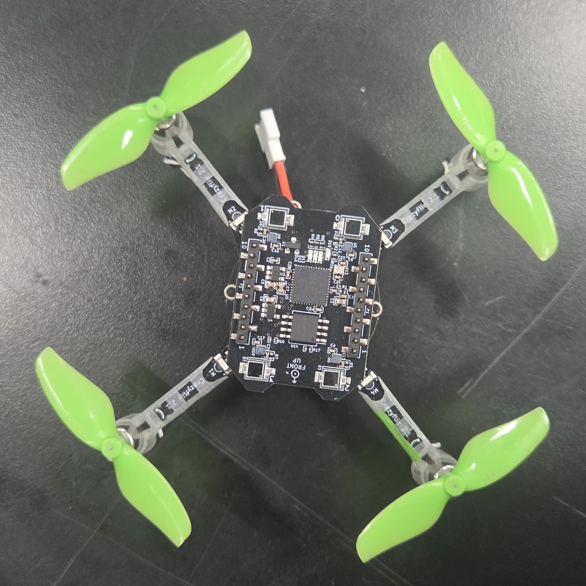
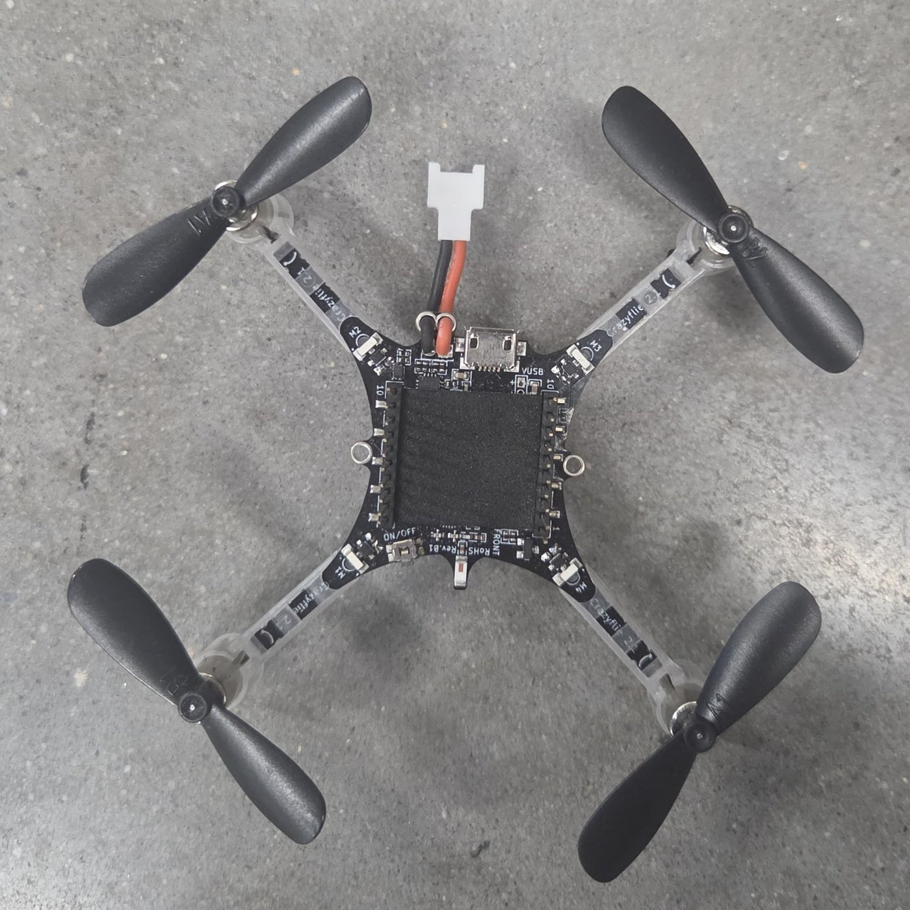
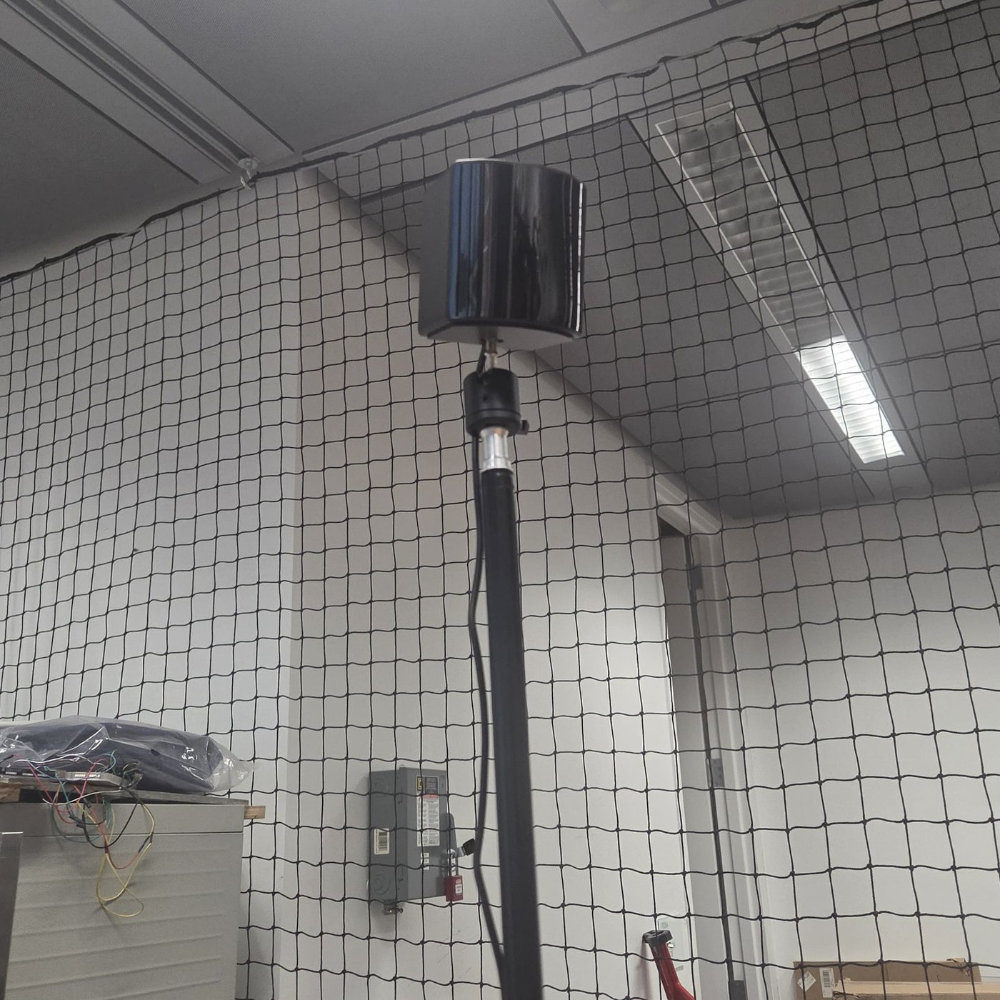

Rio Ben-Yehoshua
Mechanical Engineering Student · The Cooper Union · Class of 2029

Seeking a Summer 2027 internship in mechanical design, controls and mechatronics.
GPA 3.77Dean’s ListScholarship
Mechanical Engineering Student · The Cooper Union · Class of 2029
Seeking a Summer 2027 internship in mechanical design, controls and mechatronics.

An autonomous machine that launches, catches and reloads six balls with no human touch. I worked on the flywheel launcher and the ball return loop.

A digital scale built from four load cells, a signal amplifier and Arduino code in a custom enclosure, with tare and gram/ounce controls.

A self-sufficient indoor farming grid for small apartments, built for people with no gardening experience: removable pods that wick water by capillary action, with no pump. I helped design the pods, then laser-cut and built the physical prototype.



I’m working with a professor to program a swarm of Crazyflie nano-drones to fly coordinated formations. Each drone tracks its own position in the room with the Lighthouse system, and I program the flights in Python. Where it could lead: a swarm that acts out physics models, such as planetary orbits and a mass-spring system, and responds to a person’s gestures in near real time.

I’m working on the pedal box for the team’s Formula SAE race car, the assembly that holds the driver’s pedals and their master cylinders. I compare my SolidWorks model against the real assembly, update the CAD to match, and help build the parts.

For a child with cerebral palsy, with arm supports, a sliding foot stool and a storage shelf.
See the build →
Sand cast in 6061 aluminum, then tensile tested to failure on an Instron.
See the build →
I’m a sophomore studying mechanical engineering at The Cooper Union. I like designing and building systems that actually work: build it, test it, see where it fails, and fix it.
I’m most interested in controls and mechatronics, where mechanical design meets sensors, motors and code.
Outside of class, I cook, and I treat a recipe the way I treat a prototype: taste, adjust, and try again until it works. I speak English and Hebrew fluently, and conversational Chinese.
Used in: Ping Pong (launcher control code), Load Cell Scale (weighing code)
Used in: Ping Pong launcher (motor control), Load Cell Scale (sensing and display)
Used in: Motorsports pedal box mount (SolidWorks), Ping Pong hoop (Onshape)
Used in: Ping Pong launcher (3D printing), Ping Pong hoop and cardboard chair (laser cutting)
I serve as the link between my class and the chapter, coordinating through a class Teams group chat, helping plan chapter events and attending biweekly meetings.
I attend SWE events, which open up opportunities to connect with upperclassmen and professors across engineering.
I take part in weekly meetings centered on Jewish learning.
Trained 9+ years to an advanced rank, then coached students from age 11 to 70, adapting drills for beginners, advanced students and autistic students.